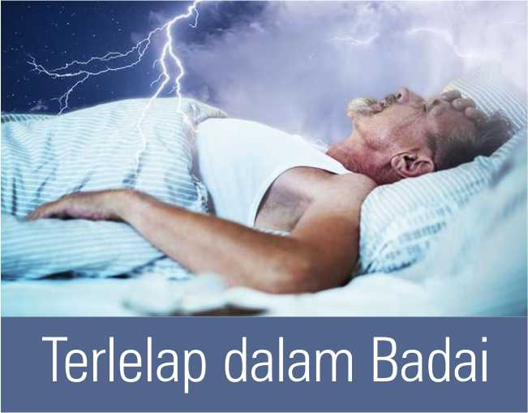

Selasa, 01 Juni 2021 | Markus 4:35-41
Setiap orang yang mendengar perkataan-Ku ini dan melakukannya, ia sama dengan orang yang bijaksana, yang mendirikan rumahnya di atas batu. Matius 7:24
Seorang peternak tua merasa sudah tidak kuat mengurus peternakannya sendiri. Ia pun memasang iklan lowongan kerja. Esoknya, seorang pemuda datang. “Kau terampil bekerja di peternakan?” tanya si peternak tua. “Pak. Aku ini bisa tidur nyenyak saat badai datang.” Si peternak bingung tapi memberi dia kesempatan juga. Ia lihat pemuda itu rajin bekerja dari pagi hingga sore. Ia cukup puas. Malamnya, pria tua itu terbangun. Daun jendelanya bergetar keras. Ia lihat di luar awan gelap bergulung-gulung. Badai! Ia segera menuju kamar pemuda itu. “Nak! Badai datang!” Namun, masih menutup mata, pemuda itu bergumam, “Sudah kubilang, aku bisa tidur meski badai datang.” Hampir saja ia memecat pemuda itu. Tapi, karena badai makin dekat, ia bergegas keluar. Di luar, ia lihat semua ternyata sudah disiapkan pemuda itu. Semua diikat erat, kandang dan gudang dipalang kuat, tak satu pun barang di luar. Semua aman. Pria tua itu tersenyum, kembali ke kamar lalu tidur nyenyak meski badai datang.
Jika kita sudah siap menghadapinya, badai pun tidak akan mengganggu tidur kita. Namun, kapan kita siap? Saat sudah menyiapkan semua. Mungkin ketika kita sudah menabung lama sehingga merasa tenang andai ada pengeluaran mendadak. Mungkin ketika kita merasa sudah berlatih menghadapi satu kejadian tertentu. Mungkin kita merasa punya teman yang pasti bisa membantu kita. Namun, kita juga sering salah mengira. Lihat, siapa sangka datang pandemi yang membuat pendapatan seret. Siapa sangka datang penyakit ganas yang langsung menguras tabungan kita. Siapa sangka orang yang kita andalkan mendadak meninggal dunia.
Kita butuh sumber pengharapan yang sungguh bisa diandalkan. Kristuslah satu-satunya. Sayang, kita sering kali seperti para murid Yesus. Mereka bersama Yesus, tapi ketika badai mengamuk, mereka malah berusaha mengatasi dengan kekuatan sendiri, bahkan mengajak Yesus “membantu” dengan cara mereka yang gagal itu. Hari ini, ingatlah untuk selalu mengandalkan Yesus. Percaya dan lakukan firman-Nya (Mat 7:24-27), sehingga bahkan saat badai datang, kita bisa tetap berkata seperti lirik lagu ini “tenanglah kini hatiku, Tuhan memimpin langkahku..” • ARC
Meski badai datang, kita bisa tetap tenang karena kita berharap pada Dia yang benar-benar bisa diandalkan.